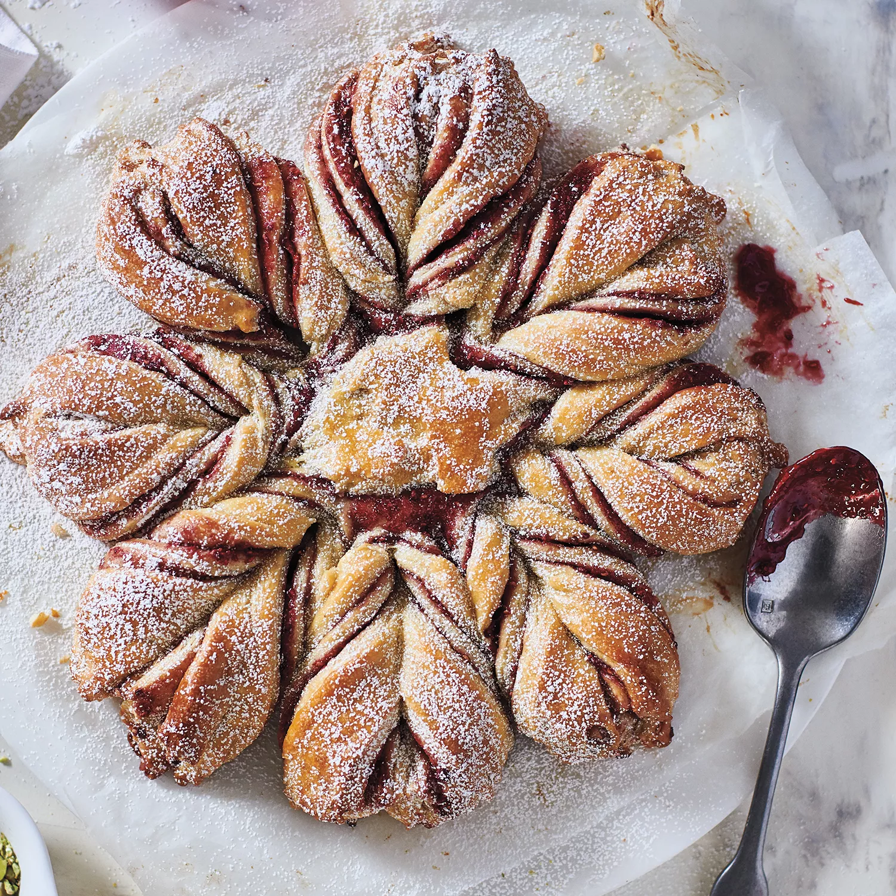

-

Golden Crescent Rolls
Ingredients
- Warm Water - 3/4 cup
- Yeast - ½ packet
- White Sugar - ½ cup
- Salt - 1 teaspoon
- Eggs - 2
- Butter - ½ cup
- Flour - 2 cups
- Butter - 2 teaspoons
Method of Preparation
In a bowl, pour warm water and yeast. do not mix. In another bowl, mix sugar, eggs, butter, flour and the yeast until smooth. Cover and allow to rise for 1½ hours.
Once risen, punch down the dough and divide in half. Sprinkle flour on a clean surface and roll the first half into a circle. Rub butter and cut into 10-15 wedges. Roll up one of the wedge starting with the wide end
In a baking pan, spray with a non-stick or cooking oil and place the rolled wedges. Cover and allow to rise for 1 hour, then brush with butter and bake for 12-15 minutes at 400°F